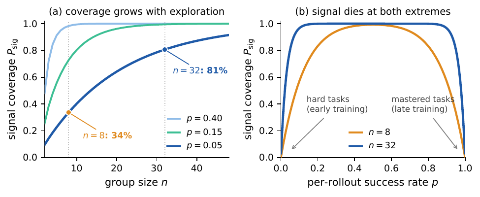
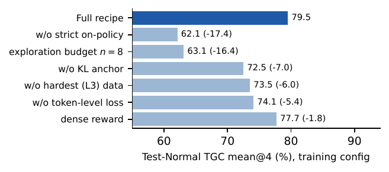
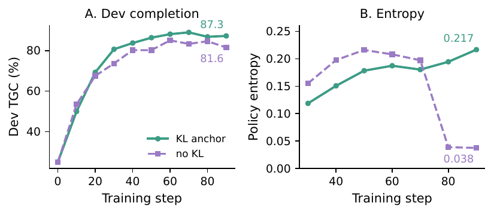

TL;DR : le « plafond » du RL outcome-only sur petits modèles ouverts n'est pas une propriété du reward sparse mais un artefact de deux pathologies de pratique — signal starvation (groupes trop petits → advantage GRPO identiquement nul sur les tâches dures) et policy drift (effondrement d'entropie quand on tire 90 steps d'un pool de 90 tâches) ; les corriger avec des ingrédients connus (n=32, KL anchor, strictement on-policy, token-mean pooled) suffit à prendre la tête du leaderboard AppWorld sans reward dense, sans SFT, sans skills, sans mémoire.
Claim principal, formulé précisément : sur des environnements à vérifieur programmatique et horizon de quelques dizaines de tours, une politique Qwen3-14B entraînée par interaction seule, reward binaire all-or-nothing, atteint TN TGC 86.9 / TC 67.6 (mean@1, budget élargi), soit +50.8 TGC sur sa base au même budget [Tab. 2] et +11.7 sur la meilleure trained policy rapportée (ESAT, mean@8) [Tab. 1] ; et l'ablation interne montre que densifier le reward ne vaut que +1.8 TGC une fois l'exploration dimensionnée [Fig. 4]. Portée explicitement bornée par les auteurs à ce type d'env [App. H].
AppWorld — rien de nouveau n'est construit côté tâches : benchmark existant [Trivedi et al. 2024], 9 applications, 457 APIs, ~100 utilisateurs simulés, 735 tâches, splits officiels Train 90 / Dev 60 / Test-Normal 168 / Test-Challenge 417 ; Test-Challenge contient des applications absentes de l'entraînement [§4.1].
- Origine : tâches humaines du benchmark, vérifieurs = unit tests state-based held-out fournis par le benchmark.
- Volume d'entraînement : 90 tâches. C'est le fait structurant du papier — 90 steps × 90 tâches × n=32 = 259 200 trajectoires sur le même pool revisité 90 fois [App. E]. Les auteurs posent cette revisite comme la cause normale du drift en env interactif [§3.3].
- Distribution de difficulté : trois tiers L1/L2/L3 (nomenclature AppWorld), tier le plus dur conservé — choix central, ablaté (−6.0 TGC si retiré) [Fig. 4]. Volume par tier : non précisé.
- Filtrage par pass@k du modèle de base : aucun filtrage de tâches. Un pilot pass avec la politique de base estime seulement p̂_min du tier le plus dur, pour dimensionner n via Eq. 8 [§3.2] — la valeur de p̂_min mesurée n'est pas rapportée (on sait seulement que n=32 est « within the range Eq. 8 suggests ») ⚠️.
- Curriculum : aucun. Pool fixe, pas de rééchantillonnage, pas de tri par difficulté, pas de dynamic sampling type DAPO. La seule « progression » est endogène : Fig. A/B des dynamiques montre que L3 reste informatif longtemps après que L1/L2 saturent [Fig. dynamics].
- Contamination / séparation : splits officiels AppWorld ; pas d'analyse de contamination du pré-entraînement de Qwen3-14B ⚠️ (le benchmark date de 2024).
- Données SFT/IFT avant RL : AUCUNE. Pas de cold start, pas de trajectoires expertes — c'est une revendication centrale, en opposition frontale à SAGE qui rapportait un effondrement sans SFT [§1, §2].
- Coût humain : nul au-delà du benchmark existant. Aucun annotateur, aucun expert.
SWE-bench [App. G] — pipeline de données réel, décrit étape par étape : 1. source SWE-rebench ; 2. filtre (i) image Docker matérialisable localement ; 3. filtre (ii) dé-duplication au niveau dépôt contre SWE-bench Verified — tout instance de tout repo apparaissant dans Verified est supprimé, pas seulement les instance-IDs ; 4. filtre (iii) prompt ≤ 4 096 tokens. Résultat : 5 639 tâches / 1 667 repos distincts, prompt moyen 1 821 tokens. - Les auteurs notent que (ii) coûte les repos populaires, « the trade we want for a contamination claim » [App. G] — ✅ c'est le choix correct et rarement fait. - Éval : les 500 instances de Verified ; 5 instances dont l'image Docker n'a pu être obtenue sont scorées 0 plutôt qu'exclues → resolve rate conservateur [App. G].
AppWorld
- Observation : boucle think–code–execute–observe. À chaque tour le modèle voit le prompt de tâche (cap 4 096 tokens) et le retour d'exécution de l'interpréteur Python sandboxé (cap d'observation 4 096 tokens) [Tab. 2, Tab. A1].
- Espace d'actions : du code Python arbitraire exécuté contre l'environnement vivant — pas de liste d'outils typés, pas de signatures d'outils (c'est le harness AppWorld : le modèle appelle les 457 APIs en écrivant du Python). Aucune signature recopiée dans le papier.
- Multi-turn : horizon 50 tours / 32 768 tokens de réponse en entraînement, 100 tours / 61k en inférence via YaRN [Tab. 2, App. I]. Longueur moyenne observée : 10 979 tokens de réponse sur 42.5 tours assistant, prompt moyen 2 417 tokens [App. E]. Le cap 32k mord sur 0.18 % des trajectoires en moyenne (max 2.5 % sur un step) → les auteurs en concluent que le budget ne tronque pas silencieusement la distribution d'entraînement ✅ (diagnostic rarement rapporté).
- Gestion du contexte long : aucune — pas de résumé, pas de mémoire, pas de compression. Juste un budget plus grand au test (YaRN).
- Choix de design notable : pas de cap de génération par tour. Seul le budget total borne la politique → le modèle alloue lui-même son raisonnement entre les tours ; les auteurs argumentent qu'un cap par tour couperait précisément les longs épisodes de récupération d'erreur [§3.2]. ⚠️ Cet ingrédient n'est pas ablaté (voir §5).
- Exécution / infra d'env [App. F] : architecture serveur–client multi-nœuds multi-process au-dessus du moteur AppWorld officiel, avec caps mémoire par worker + recyclage automatique, timeouts de requête avec réparation de worker, isolation d'état au niveau épisode.
- Gestion des erreurs — la contribution la plus sous-vendue du papier : le fault quarantine. Deux classes de fin d'épisode sans verdict sont distinguées :
- agent-induced (boucle infinie atteignant la limite de tours, allocation du modèle épuisant sa mémoire, corruption d'état limitée à son épisode) → scoré 0, comme une mauvaise réponse ;
- exogène (worker OOM-killed par un épisode co-résident, process mort, corruption traversant les frontières d'épisode, échec de requête infra) → entre dans l'ensemble F, retiré du groupe avant le calcul de l'advantage, ne contribue ni un reward ni un token au dénominateur N.
- Ordre : quarantaine avant scoring, donc mean/std de l'Eq. 3 sont calculés sur le groupe réduit. L'ordre inverse (scorer puis masquer la loss) laisserait le faux négatif dans les statistiques du groupe [App. F].
- Les auteurs énoncent trois caveats eux-mêmes : (1) l'attribution est une heuristique de serving, pas une preuve, et peut biaiser le groupe de façon optimiste ; (2) le compte de quarantaines par step n'a pas été loggé → pas de taux d'exclusion, pas d'expérience de sensibilité (re-entraîner en scorant les quarantinés comme échecs) ; (3) avant cette couche, des runs par ailleurs similaires plafonnaient vers 47 TGC par corruption silencieuse de l'environnement, et des recettes comparables atteignaient 73–74 après stabilisation [App. F].
- ⚠️ Point majeur pour notre revue : l'écart 47 → 73–74 attribué à la seule fiabilité du serveur est du même ordre que tous les deltas algorithmiques réunis (−17.4 max). Les auteurs le disent explicitement (« at a scale comparable to the algorithmic choices ») et en tirent la bonne conclusion : la règle de quarantaine fait partie du protocole à reproduire, pas d'un détail d'implémentation. Corollaire gênant : aucune des comparaisons à la littérature n'est appariée sur la fiabilité d'env, et une part inconnue de l'avance de CANOPY peut venir de là.
- Un diagnostic positif : le ratio d'aborts côté génération est 0 sur les 90 steps du run principal [App. F].
- SWE-bench [§4.5, App. G] : shell bash dans un conteneur Docker, harness mini-swe-agent (bash-only, aucun outillage spécifique au dépôt), 80 tours / 36 864 tokens, cap de réponse d'outil 4 096, budget d'env 2 CPU / 6 GB par épisode, timeout de rollout 5 400 s, thinking mode désactivé [Tab. A3].
- Exemple de trajectoire : aucun dans le papier (ni corps ni annexe). ⚠️ Pour un papier qui insiste sur les « longs épisodes de récupération d'erreur », l'absence de toute trajectoire est une lacune réelle.
U(q) du benchmark ; SWE-bench = tests propres au projet. Aucun LLM-as-judge, aucun reward model, aucun signal de process, aucune rubrique — c'est le point du papier.r = (1/M) Σ pass(u_j, o_i) ∈ [0,1] ;r = 1[Σ pass = M] ∈ {0,1}.Algorithme. GRPO [Shao et al. 2024] avec advantage standardisé within-group Â_i = (r_i − mean)/std [Eq. 3], std-normalized (confirmé Tab. A1 : « advantage estimator : GRPO, std-normalized »). Deux écarts seulement à l'objectif GRPO original, tous deux motivés par le drift [§3.3] :
1. Dénominateur unique N = total des action tokens poolés sur tout le batch (token-mean pooled), au lieu de normaliser par séquence puis moyenner — pour que les longs épisodes de récupération d'erreur ne soient pas sous-pondérés par leur propre longueur (cause de drift n°3) ;
2. pénalité KL ajoutée à la surrogate clippée négative, estimateur k3 [Schulman 2020], π_ref fixée au modèle de base pendant tout l'entraînement (pas de ref glissante) (cause n°1).
Plus un masque M_{i,t} qui confine le gradient aux action tokens (thinking + code de l'agent), excluant les tokens d'environnement ; et l'exclusion des épisodes F (quarantaine) du numérateur comme du dénominateur. Loss : L = (1/N) Σ_{i∉F} Σ_t M_{i,t} [ −S_{i,t} + β·D_KL ] [Eq. 10].
Le clipping est inerte. Le ratio d'importance et le clip sont conservés « pour continuité de notation » mais, mini-batch = batch et une seule passe ⇒ ρ ≡ 1. Vérifié dans les logs, pas seulement affirmé : actor/pg_clipfrac et actor/ppo_kl sont identiquement 0 aux 90 steps, dans les deux directions de clip [App. C]. La surrogate se réduit donc au policy gradient simple. ✅ Rare et bon réflexe de vérification.
Hyperparamètres — run principal AppWorld [Tab. 2 + Tab. A1, configuration complète] :
| Paramètre | Valeur |
|---|---|
| base | Qwen3-14B |
| tasks / steps / train batch | 90 / 90 / 90 tâches (1 epoch par step) |
| group size n | 32 (→ 2 880 rollouts/step) |
| ppo mini-batch | 90 tâches = batch entier, 1 update/step, ppo epochs = 1 |
| micro-batch / GPU | 4 (accumulation de gradient seulement — split le backward, pas l'update ⇒ aucun lag de politique) |
| KL β / référence | 1e-4, estimateur k3, π_ref = base fixe |
| entropy bonus | 0 |
| clip ε low/high | 0.2 / 0.2 (inerte, cf. supra) |
| advantage | GRPO std-normalized |
| loss aggregation | token-mean, pooled |
| optimizer / LR | AdamW / 3e-6, constant |
| budget d'entraînement | 50 tours / 32 768 tokens de réponse ; prompt 4 096 ; observation 4 096 ; pas de cap de génération par tour |
| température (train) | 0.9 |
| reward | sparse {0,1}, tous les unit tests |
| validation group size | 4 |
| checkpoint | step 90, fixe (aucun early stopping, aucune sélection sur Dev) |
| hardware | 8 nœuds × 8 GPU ; Megatron TP8 / PP1 / CP2 ; rollouts SGLang async TP8 ; framework verl |
| inférence | 100 tours / 61k (YaRN), T=0.6, top-k 20, top-p 0.95 |
SWE-bench — ce qui est re-tuné (les auteurs listent chaque différence pour éviter la lecture « transfert littéral ») [App. G, Tab. A3] : n=16 (épisodes bien plus chers), KL β=1e-2 (deux ordres de grandeur au-dessus), 80 tours / 36 864 tokens, 260 steps (~3 epochs) sur 5 639 tâches, batch/mini-batch 64/64, LR 4e-6, T=1.0, micro-batch 1, Megatron TP4/PP2/CP1, SGLang TP2, thinking désactivé, constantes −0.2.
Stabilité. Le KL anchor est le mécanisme de stabilité, et son retrait ne produit pas un plateau tranquille mais une instabilité d'optimisation franche : grad norm 4.7e4 au step 90 contre 0.014 pour la recette complète — quatre ordres de grandeur [App. D, Tab. A2]. Entropie finale : 0.217 (ancré) vs 0.038 (non ancré) vs 0.036 (variante off-policy) — deux routes différentes vers le même effondrement. Aucune astuce supplémentaire (pas de clip-higher, pas de reset, pas d'early stopping, pas de warmup rapporté). Rien n'est décrit comme « essayé puis abandonné » côté algo ; côté infra, oui (voir le 47 → 73–74 du §2).
Compute — rapporté précisément [App. E] : 259 200 trajectoires · 3.47e9 tokens traités (génération + training, sommés sur les logs par step) · 42.0 h wall-clock sur 64 GPU ≈ 2 690 GPU-heures · 1 680 s/step en moyenne, la génération dominant tôt puis décroissant à mesure que les trajectoires raccourcissent · MFU acteur 0.80. Les auteurs précisent que « minimalist » désigne le nombre de pièces mobiles, pas la frugalité en compute. ✅ Honnêteté inhabituelle.
Dynamique [Fig. dynamics, Fig. kl, Tab. A2] : - composition des groupes : les groupes all-fail disparaissent en ~10 steps ; le train reward sature au-dessus de 0.99 et les groupes all-success prennent le dessus → la fraction informative s'effondre. « La convergence, c'est le signal qui s'épuise » — le versant empirique de la Fig. 2b. - par difficulté : L3 reste informatif bien après l'extinction de L1/L2 → sous couverture adéquate, le tier dur est la dernière source de gradient, pas du bruit. - longueur de réponse : décroît au cours de l'entraînement (déduit de « generation … shrinks as trajectories shorten », App. E). Pas de courbe de longueur publiée. - entropie : monte de ~0.12 (step 30) à 0.217 (step 90) dans le run ancré — contre-intuitif et notable : le KL anchor + token-mean n'empêche pas seulement l'effondrement, l'entropie croît [Fig. kl B].
Le papier ne rapporte aucun cas de reward hacking. ⚠️ Mon évaluation : c'est crédible vu la conception du reward — binaire, all-or-nothing, calculé par des unit tests d'état held-out exécutés par le SDK officiel, sans terme de format ni de longueur. Il n'y a littéralement pas de proxy à exploiter. C'est précisément l'argument des auteurs contre le reward dense (cause de drift n°4) et il est logiquement solide.
Les failure modes rapportés sont tous des pathologies d'entraînement, chacune diagnostiquée → corrigée → ablatée :
| # | Comportement | Comment détecté | Correction | Prix mesuré |
|---|---|---|---|---|
| 1 | Signal starvation : advantage identiquement nul sur les tâches dures (groupe dégénéré) | analytique P_sig(p,n)=1−p^n−(1−p)^n [Eq. 7] + logs de composition de groupe [Fig. dynamics A] |
n=32 dimensionné depuis un pilot pass (Eq. 8) | n=8 → −16.4 TGC [Fig. 4] |
| 2 | Spike de variance : un succès isolé reçoit Â₊=√(n−1) contre −1/√(n−1) pour chacun des n−1 échecs → une trajectoire chanceuse porte tout le gradient du groupe |
dérivation [App. B] : Â₊=√((n−k)/k), Â₋=−√(k/(n−k)) |
agrandir n ne supprime pas le cas k=1 mais le rend minoritaire parmi les groupes informatifs | non isolé |
| 3 | Exclusion des tâches dures (pratique publiée : LOOP, GVPO les jugent « harmful ») | ablation | garder L3 | retirer L3 → −6.0 TGC ⇒ renverse la conclusion publiée, qui n'était valide qu'à petit n |
| 4 | Policy drift / effondrement d'entropie après step ~70, quand la saturation rend les groupes informatifs rares | Dev TGC plateau + entropie + grad norm dans les logs [Fig. kl, Tab. A2] | KL anchor β=1e-4 vers la base fixe | sans KL → −7.0 TGC, entropie 0.038, grad norm 4.7e4 |
| 5 | Lag de politique (batch consommé en 2 updates) | clip frac non nul dès le 1er step [App. C-D] | mini-batch = batch, 1 passe | −17.4 TGC, entropie 0.036 |
| 6 | Biais de longueur de la loss : la moyenne par séquence divise chaque trajectoire par sa propre longueur → sous-pondère les longs épisodes de récupération d'erreur | ablation | token-mean poolé sur un N unique |
−5.4 TGC |
| 7 | Faux négatifs infrastructurels : crash serveur indiscernable d'un échec sous reward binaire | attribution de faute côté serving | fault quarantine avant scoring | non mesuré (compte non loggé) ; mais 47 → 73–74 TGC avant/après stabilisation du serveur |
Comportement émergent positif : l'entropie croît sous ancre KL au lieu de décroître [Fig. kl B] ; et le budget élargi au test profite surtout au tier L3 et aux applications jamais vues [Fig. tts] — la politique a appris une capacité qu'elle ne pouvait pas dépenser au budget d'entraînement.
⚠️ Ingrédients non ablatés : le cap de génération par tour absent, le dimensionnement de n par pilot pass (seul n=32 vs n=8 est testé, l'heuristique Eq. 8 n'est pas validée), le fault quarantine, le masque sur les action tokens (l'alternative — entraîner aussi sur les tokens d'environnement — n'est pas testée), le transfert de budget au test côté SWE est mesuré mais pas isolé des autres choix.
| Chiffre annoncé | Où il est annoncé | Source dans le papier | Verdict |
|---|---|---|---|
| Test-Normal TGC 86.9, Test-Challenge 67.6 | abstract, §1, §4.2 | Tab. 1 (86.9 / 80.4 / 67.6 / 50.4) ; Tab. 2 ligne « Leaderboard (m@1, 100t/61k) » | confirmé |
| « topped the public leaderboard (Feb. 2026) » | abstract, §1, conclusion | Tab. 1 : ASSAY 89.3 (Sonnet 4.5, mean@1) et HCL-GP 98.2 sont au-dessus sur Test-Normal. §4.2 restreint : « under the standard per-task protocol at that time », et explique que HCL-GP utilise un protocole joint-scenario non comparable + debugging au test, ASSAY un backbone frontier fermé | sur-généralisé — vrai parmi les trained policies et, selon les auteurs, parmi les entrées du leaderboard officiel à cette date ; faux comme énoncé absolu face aux chiffres de leur propre Tab. 1 (89.3 d'ASSAY est paper-reported). Le corps corrige, l'abstract non |
| +16.6 points sur SWE-bench Verified (Qwen3.5-9B) | abstract, §1 | Tab. 4 : 31.3 → 47.9 mean@4, Δ explicitement « row 2 vs row 1, at matched budget » | confirmé |
| « lifted its base by more than 50 TGC points » | §1, §4.2 | Tab. 2 : base 32.4 → CANOPY 83.2 mean@4 à 100t/61k = +50.8 | confirmé |
| mène ESAT de « nearly 12 » TGC (TN) et 9 (TC) | §4.2 | Tab. 1 : 86.9−75.2 = 11.7 ; 67.6−58.5 = 9.1 | confirmé (⚠️ ESAT est mean@8, CANOPY mean@1 — l'écart réel est donc plutôt sous-estimé, mais la comparaison n'est pas appariée en protocole) |
| « six ablations pricing each ingredient » | §1 | Fig. 4 + Tab. A2 : 6 variantes (on-policy, n=8, KL, L3, token-level, dense) | confirmé |
| budget élargi aide la base « by more (22.8 to 32.4) » | §4.3 | 32.4 est dans Tab. 2 ; 22.8 (base à 50t/32k) n'apparaît dans aucune table ni figure | introuvable (chiffre présent au seul fil du texte ; le reste du raisonnement — « 47 points below » = 79.5−32.4 = 47.1 — est bien tabulé) |
| « notre run unique de 86.9 dépasse le best@4 de la base, 58.9, de 28 points » (67.6 vs 37.7 en TC) | §4.3, contre Yue et al. / Szot et al. | Tab. 2 : base best@4 = 58.9 (TN) / 37.7 (TC) | confirmé arithmétiquement ; ⚠️ sur-généralisé comme réfutation de « RL pass@1 ≤ base pass@k » : k=4 seulement, et le 86.9 est au budget élargi alors que le best@4 de la base est aussi à 100t/61k — comparaison correcte en budget, mais k=4 est un test faible de la thèse du « boundary » |
| couverture passe de 34 % (n=8) à 81 % (n=32) à p=0.05 | §3.2, Fig. 2a | recalculé : 1−0.95^8 = 0.337 ; 1−0.95^32 = 0.806 | confirmé |
| entropie 0.038 vs 0.217, Dev 81.6 vs 87.3 (sans/avec KL) | §4.3, Fig. kl | Fig. kl + Tab. A2 (lignes « Full recipe » et « w/o KL anchor ») | confirmé |
| densifier le reward ne coûte que −1.8 | §4.4 | Fig. 4 (77.7 vs 79.5) + Tab. A2 | confirmé, et les auteurs le qualifient eux-mêmes de « suggestive rather than established » [App. D] |
| « nous publierons le stack complet » | abstract | App. J ne contient que « All evaluation uses the official AppWorld and SWE-bench harnesses » | annoncé, non vérifiable (dépôt non confirmé publié) |
Verdict 7.0 : arithmétique exacte partout, traçabilité excellente (chaque nombre du corps se retrouve dans une table ou un log). Deux réserves : « topped the public leaderboard » est une revendication à portée restreinte énoncée sans restriction dans l'abstract, et un chiffre (22.8) n'est tabulé nulle part.
| Comparaison | Score | Référence | Écart absolu |
|---|---|---|---|
| CANOPY Qwen3-14B, TN TGC m@1 | 86.9 | base Qwen3-14B @100t/61k m@4 : 32.4 | +54.5 (m@1 vs m@4) |
| CANOPY TN m@4 @100t/61k | 83.2 | base m@4 même budget : 32.4 | +50.8 |
| CANOPY TC m@4 @100t/61k | 66.1 | base : 19.7 | +46.4 |
| CANOPY vs meilleure trained policy (ESAT, Qwen3-14B, m@8) | 86.9 / 67.6 | 75.2 / 58.5 | +11.7 / +9.1 |
| CANOPY vs LOOP (Qwen2.5-32B, plain outcome RL) | 86.9 / 67.6 | 72.6 / 47.2 | +14.3 / +20.4 |
| CANOPY vs GVPO (reward dense d'exécution, 32B) | 86.9 / 67.6 | 72.6 / 49.4 | +14.3 / +18.2 |
| CANOPY vs SAGE (skill library + SFT, 32B) | 86.9 / 67.6 | 72.0 / 50.1 | +14.9 / +17.5 |
| SWE-bench Verified m@4 | 47.9 (→ 50.2 budget élargi) | base Qwen3.5-9B : 31.3 | +16.6 (+18.9) |
[Fig. 4, Tab. A2, une seule run d'entraînement par variante, re-entraînée from scratch, un réglage changé, TN TGC mean@4 au budget d'entraînement]
| Variante | TN m@4 | Δ | entropie @90 | grad norm | train reward |
|---|---|---|---|---|---|
| Recette complète | 79.5 | — | 0.217 | 0.014 | 0.997 |
| dense reward | 77.7 | −1.8 | 0.194 | 0.018 | 0.999 |
| w/o token-level loss | 74.1 | −5.4 | 0.140 | 0.019 | 0.994 |
| w/o hardest (L3) data | 73.5 | −6.0 | 0.093 | 0.037 | 0.993 |
| w/o KL anchor | 72.5 | −7.0 | 0.038 | 4.7e4 | 0.984 |
| exploration n=8 | 63.1 | −16.4 | 0.156 | 0.045 | 0.931 |
| w/o strict on-policy | 62.1 | −17.4 | 0.036 | 0.064 | 0.946 |
Trois lectures que les auteurs tirent eux-mêmes [App. D] : (i) l'entropie finale ordonne les variantes presque exactement comme le score — le récit du drift en une colonne ; (ii) le run sans KL n'est pas un plateau tranquille mais une instabilité d'optimisation (grad norm 4.7e4) ; (iii) le train reward est saturé > 0.93 partout, donc les écarts ne viennent pas d'un échec à fitter le pool, mais de la distribution à laquelle chaque variante arrive.
Deux aveux méthodologiques majeurs, portés par les auteurs eux-mêmes : - n=8 n'est pas apparié en compute : à steps égaux il s'entraîne sur un quart des trajectoires, donc −16.4 borne par le haut l'effet de couverture et ne l'isole pas. Le contrôle manquant (n=8 avec batch de tâches ×4, ou n=8 sur ×4 steps) n'a pas été lancé ; les auteurs le qualifient de « most important open check on our central claim » [App. E]. ✅ Honnêteté rare, ❌ trou réel au cœur du claim « explore more ». - « w/o strict on-policy » n'est pas une contraste à une variable [App. D] : halver le mini-batch double aussi le nombre d'updates (180 vs 90), halve le nombre de trajectoires moyennées par estimation de gradient (→ variance), et change la trajectoire des moments Adam et du pas effectif. De plus le run utilise 88 tâches / mini-batch 44 au lieu de 90/90. Les auteurs refusent d'attribuer les −17.4 au lag et notent que le lag lui-même n'est jamais contraignant (clip frac moyen 1.5e-3, max 2.7e-3, KL mesurée 1.6e-4, < 0.3 % de tokens clippés). Ce que la variante price est le package « consommer un batch en deux demi-updates », ce qu'un praticien choisit réellement.
Verdict : plausible mais fragile — et fragile exactement là où l'article le dit. La direction du résultat est solide (une politique 14B outcome-only atteint un niveau que la littérature plaçait hors de portée sans reward dense ni skills ni SFT, et l'auto-diagnostic — entropie, grad norm, clip frac, composition de groupe — est cohérent de bout en bout). Ce qui ne tient pas, c'est l'attribution causale : (1) le gain de couverture n'est pas séparé du gain de sampling total, par l'aveu même des auteurs ; (2) l'avance sur les méthodes à reward dense mélange backbone, protocole et fiabilité d'env ; (3) une seule seed d'entraînement. À répliquer sur le contrôle n=8 apparié en compute, qui est l'expérience que les auteurs désignent eux-mêmes comme décisive.
Grille evidence (6 cases)
1. baselines faux — chiffres repris du leaderboard/d'autres papiers, backbones et protocoles de sampling différents, env non apparié en fiabilité ; aucune méthode concurrente ré-entraînée.
2. ablation vrai — 6 variantes re-entraînées 90 steps, un réglage changé chacune, + diagnostics internes ; le claim central « dense pas nécessaire » est isolé à compute apparié.
3. variance vrai — pas de seed d'entraînement multiple (1 run/variante, déclaré), mais intervalles rapportés et quantifiés côté évaluation : mean@4, σ par variante, SE dérivé ≈0.5 TGC, CI bootstrap [Tab. A2, App. D, Fig. dynamics]. Case accordée pour les intervalles rapportés ; la limite seeds d'entraînement reste à retenir.
4. coherence vrai — arithmétique exacte partout, chaque chiffre tracé ; réserves : « topped the leaderboard » sur-généralisé dans l'abstract, 22.8 introuvable en table.
5. eval vrai — harnesses et unit tests officiels, 3 configs tenues séparées, checkpoint fixé a priori, dé-dup repo-level côté SWE, pas de juge à valider.
6. repro faux — stack « we plan to release » ; la couche serving qui vaut ~26 TGC n'est pas publiée.
→ evidence = 4/6, manquant [baselines, repro].

Ce qu'il faut voir : le mécanisme en une image. (a) à p=0.05, la probabilité de tirer un groupe à outcomes mixtes passe de 34 % à n=8 (le réglage de LOOP/GVPO/SAGE) à 81 % à n=32, puis aplatit — la même tâche bascule de « muette » à « informative » sans toucher au reward. (b) la couverture meurt aux deux extrêmes : tâches dures en début d'entraînement, tâches maîtrisées en fin. C'est l'argument entier : ce que la littérature a lu comme « les tâches dures nuisent » est une mesure de l'axe (a) à n trop petit. ⚠️ Modèle à rollouts indépendants,p̂_min estimé sur un pilot non rapporté — heuristique de dimensionnement, pas prescription.

Ce qu'il faut voir : l'ordre des prix. Les deux coûts lourds sont on-policy strict (−17.4) et taille de groupe (−16.4), un de chaque côté du diagnostic ; KL −7.0, L3 −6.0, token-level −5.4 ; et le reward dense ne vaut que −1.8, le plus petit delta de la figure. C'est le chiffre qui contredit frontalement le corpus « reward dense / crédit de process ». À lire avec deux réserves portées par les auteurs : n=8 n'est pas apparié en compute (un quart des trajectoires), et la variante off-policy change plusieurs facteurs à la fois ; une seule run par barre.
Ce qu'il faut voir : le failure mode principal, en direct. Les deux runs sont indistinguables jusqu'au step ~60 ; puis l'entropie du run non ancré s'effondre (0.217 → 0.038 entre les steps 70 et 80) et le Dev plafonne à 81.6, tandis que le run ancré continue à monter jusqu'à 87.3 sans early stopping. Deux détails : (i) le run sans KL a l'entropie la plus haute jusqu'au step 70 — l'ancre ne bride pas l'exploration, elle l'empêche de s'auto-détruire, et l'entropie du run ancré croît ; (ii) Tab. A2 ajoute que la chute s'accompagne d'une grad norm à 4.7e4 (vs 0.014) — effondrement et instabilité d'optimisation. Transposé au juridique : c'est le symptôme à instrumenter dès le premier run sur un pool de tâches petit et revisité.| Ingrédient | Choix du papier | Équivalent juridique | Transfert | Ce qui manque |
|---|---|---|---|---|
| Source des tâches | 90 tâches humaines d'un benchmark existant, pool fixe revisité 90×, tier le plus dur conservé, aucun filtrage | tâches de recherche juridique / rédaction d'actes construites par des juristes, pool nécessairement petit et cher, revisité de nombreuses fois | direct (le régime « petit pool revisité » est exactement le nôtre — c'est même l'intérêt principal du papier pour nous) | rien sur comment construire des tâches ; le pool est donné. Pas de génération synthétique, pas de curriculum |
| Vérifieur | unit tests d'état held-out, exécutés par du code, r ∈ {0,1} all-or-nothing |
pas d'équivalent : pas de vérité exacte, réponses longues et argumentées, sources évolutives, juridictions multiples | non — le cœur du résultat ne se transporte pas. App. H le dit : « the ‘manufacture the signal' remedy depends on a verifier we would not have » | tout. Le juridique est le cas que les auteurs excluent explicitement |
| Granularité du reward | sparse strictement préféré au dense (−1.8 seulement), car « no proxy to drift toward » | rubriques multi-critères, juge LLM, vérification de citations | adaptable par inversion : l'argument ne dit pas « le sparse est meilleur », il dit « un reward dense coûte sa propre erreur de proxy » — à budget d'exploration suffisant. En juridique nous n'avons que des proxys, donc le vrai transfert est : mesurer l'erreur du proxy, pas la supposer | aucune méthode pour quantifier l'erreur de proxy ; le papier contourne le problème au lieu de le résoudre |
| Harness / outils | code Python arbitraire sur env vivant, 50 tours, obs. cap 4k, pas de cap de génération par tour, pas de mémoire ni de skills | recherche documentaire (requêtes, lecture de sources, citation), 20–50 tours, retours d'outils longs | adaptable : l'absence de cap par tour (le modèle alloue son raisonnement) et la discipline « obs. cap fixe, génération libre » se transposent telles quelles | non ablaté ; et l'appui sur un budget élargi au test suppose un modèle à contexte extensible proprement (YaRN ici) |
| Algo | GRPO std-normalized, n=32, β=1e-4 k3 vers base fixe, mini-batch = batch (1 update/step), token-mean poolé sur action tokens, pas d'entropy bonus, clip inerte | identique, aucune dépendance au domaine | direct — la recette d'optimisation est domaine-agnostique et entièrement spécifiée [Tab. A1] | la vérification ρ≡1 suppose de pouvoir se payer 1 update par batch de rollouts ; en juridique les rollouts coûteront surtout en juge, pas en GPU |
| Dimensionnement de l'exploration | n depuis un pilot pass : n ≳ ln(1−τ)/ln(1−p̂_min) |
pilot pass du modèle de base sur les tâches juridiques les plus dures, puis n fixé pour une couverture cible | direct comme discipline, à nuancer : avec un reward continu (rubrique), les groupes ne sont jamais dégénérés au sens de l'Eq. 7 — mais ils le deviennent en pratique dès que la rubrique sature ou ne discrimine pas | la formule est binaire par construction ; il faudrait une version « variance within-group » pour reward continu. Non fournie |
| Curriculum | aucun ; garder le tier dur, pas de filtrage, pas de rééchantillonnage | — | direct par défaut (ne pas filtrer les tâches dures) | la preuve (−6.0) est single-seed et valable à n=32 |
| Anti-hacking | aucun mécanisme — le reward binaire sur tests held-out ne laisse pas de prise | juge LLM = surface de hacking maximale (style, longueur, confiance de ton, citations plausibles) | non — nous héritons du problème que ce papier élimine par construction | rien dans le papier n'aide ; tout l'anti-hacking reste à construire |
| Fiabilité d'env | fault quarantine avant scoring : faute exogène → retirée du groupe, faute agent-induced → scorée 0 ; ~26 TGC d'effet | juge indisponible / timeout / refus de réponse / parse échoué → retirer du groupe, pas scorer 0 ; mauvaise réponse du modèle → 0 | direct, et c'est le transfert le plus sous-estimé : sous reward binaire ou rubrique, une panne d'infra injecte un faux négatif dans mean/std de l'advantage | compte de quarantaines non loggé, taux d'exclusion inconnu, pas d'expérience de sensibilité |
| Budget au test | entraîner à 50t/32k, servir à 100t/61k ; gains concentrés sur tâches dures et apps inconnues | entraîner à budget de recherche modéré, servir à budget étendu sur les dossiers complexes | adaptable | mesuré sur un seul modèle, un seul saut de budget |
Meilleur ingrédient à transposer. Pas le reward sparse — nous ne l'aurons jamais. Le couple diagnostic + instrumentation : (1) dimensionner le groupe depuis un pilot pass sur le tier le plus dur plutôt que de prendre n=8 par habitude, et (2) traiter l'entropie de politique, la grad norm et la composition des groupes comme des métriques de premier ordre loggées à chaque step. Tab. A2 montre que l'entropie finale ordonne les variantes presque exactement comme le score de test : en juridique, où chaque point d'éval coûte un juge (ou un juriste), avoir un prédicteur interne gratuit de la qualité finale change l'économie des ablations. Vient juste après : le fault quarantine avant scoring — règle de 5 lignes, effet de l'ordre de grandeur des choix d'algo.
Expérience minimale. Sur un pool juridique de ~100 tâches à vérifieur partiel (par ex. questions à réponse courte vérifiable + citations vérifiables mécaniquement contre une base de sources), entraîner Gemini en GRPO outcome-only avec deux réglages de n (le n par défaut vs n dimensionné par pilot pass sur le tier dur) à compute total apparié — c'est-à-dire exactement le contrôle que ce papier n'a pas lancé. Logger entropie, grad norm, fraction de groupes informatifs par tier. Résultat attendu : si le papier a raison, le grand n gagne même à compute apparié, et la fraction de groupes informatifs sur le tier dur prédit le gain ; s'il a tort, le gain du papier était du sampling total et nos efforts doivent aller au reward, pas à l'exploration. Les deux issues sont informatives, et l'expérience est petite. Second run, quasi gratuit : KL anchor on/off sur 90 steps, en regardant l'entropie plutôt que le score.
Question à poser en interne chez GDM. Deux, liées. (1) Quelle part de nos plateaux attribués au reward est en fait de la variance d'infrastructure ? — logguons-nous, par step, le taux d'épisodes terminés sans verdict, et sont-ils retirés du groupe avant le calcul de l'advantage, ou scorés 0 ? Si c'est le second, nous injectons des faux négatifs dans mean/std, et le passage 47 → 73–74 de ce papier indique l'ordre de grandeur de ce que ça coûte. (2) Avons-nous un contrôle apparié en compute pour nos choix de taille de groupe ? — c'est l'expérience que les auteurs désignent comme le check ouvert le plus important sur leur propre claim, et elle est transposable telle quelle à notre pipeline.